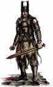

Guildes
Garde de Stormwind (la)
Eskilan
Age : 23Sexe : Homme
Race : Humain
Faction : Alliance
Formation : Guerrier
Description : Je m'appelle Eskilan, j'ai 23 ans.
Je suis née à Hurlevent, n'ayant jamais connus ma mère, c'est mon père qui m'a élevé. Il était l'un des meilleurs forgerons de tout Elwynn et il comptait même parmi ses clients des nains qui venaient d'Ironforge pour lui acheter sa spécialité : les épées.
En effet mon père forgeait les plus belles lames qui soient et de ce fait, je me suis retrouvé avec des épées à la main dès mon plus jeune age, d'où mon attirance aujourd'hui pour ces armes là.
Mais si mon père savait faire de somptueuses lames, il les utilisait très mal. C'est ce qui l'a perdu...
Un jour il y a eu une attaque de hordeux sur Stormwind... mon père s'est retrouvé la où il fallait pas... ils n'ont eu aucune pitiée envers lui, on a retrouvé peu de temps après sa tête au fond du lac...
J'avais alors 15 ans et les instances de Stormwind ont décidés de m'envoyer auprès des moines de Northshire pour que j'y étudie... Ils n'avaient rien compris! je ne voulais pas étudier mais me battre!
J'ai passé plusieurs années difficile... Passant pour l'orphelin de service et étant méprisés par les autres qui voyaient bien que je n'était pas comme eux. D'ailleurs cela finissait souvent en bagarre générale... j'entend par bagarre générale moi seul contre dix des autres jeunes. Heureusement que ses foutus intellectuels ne connaissaient rien en l'art du combat.
De par mon comportement bagarreur j'était très peu apprécié de mes tuteurs et je pense que le pire de tout fut le jour où l'une des plus belles épées de l'abbaye eut disparut. Tout le monde la chercha partout pour finalement s'apercevoir que je l'avais prise discrètement pour aller m'entrainer sur le toit ... il faut dire je n'avait pas pu en utiliser depuis fort longtemps! Depuis la mort de mon père à vrai dire...
J'était à la limite de la fugue... et je pense que je l'aurais fait s'il n'y avait pas eu un évènement imprévu :
j'avais alors 17 ans, presque 18. L'un des moines voulait réunir tout les jeunes pour nous faire un petit topo sur l'histoire d'Azeroth. Les soldats était quand a eux sortis en expédition et donc personne ne pouvait me gronder d'arriver en retard. J'en profita donc et arriva facilement 25 minutes après les autres. Mais ce que je vit par la fenêtre me fit bondir : à l'intérieur 2 moines et tout mes camarades se faisait menacés par un défias armés d'une dague qui était en train de leur voler tout leur bien. Il ne me fallut pas longtemps pour réfléchir : je fonça chercher l'épée que j'avais deja dérober une fois et entra dans la salle comme un fou me ruant vers le défias. Mais je n'avais jamais eu aucune formation professionnelle en tant que guerrier et le défias parait ou évitait facilement mes coups maladroits. Il réussi même à m'entailler à plusieurs reprises. Alors que je me croyais perdu quelque chose de nouveau s'empara de moi... la rage du guerrier... j'en avait deja entendu parler par des clients de mon père il ya quelques années. La rage est la force du guerrier. Il lui suffit de l'utiliser lors d'un combat pour décupler ses forces et ses talents. Je laissa la rage monter en moi et je chargea de plus belle -Eskilan le lion sauvage était né- pour chaque coups qu'il parait je lui en rendait deux tant et si bien qu'à force de m'acharner je réussi à le toucher à la cuisse, le déséquilibrant et me permettant de lui porter le coup fatal. Je venais de tuer pour la première fois.
Bizarement à partir de ce jour le regard de mes camarades et des moines changeat. Et ils comprirent enfin... Ils décidèrent de me donner une formation de guerrier. C'est ainsi que de 18 à 21 ans j'étudia auprès du maitre des guerriers l'art du combat, les techniques et surtout comment utiliser la rage au mieux.
Mais il me manquait une autre formation qu'on ne pouvait me donner à l'abbaye... celle qu'à reçu mon père, celle de forgeron. Je m'était promis à sa mort de devenir un jour un aussi bon forgeron que lui. J'y arriverais.
C'est ainsi que je quitta l'abbaye à 21 ans pour partir apprendre auprès d'autres maitres. Laissant ici une partie de mon enfance pour me diriger vers ma vie d'homme... ma vie de forgeron... ma vie vie de guerrier... ma vie de lion sauvage toujours prêt au combat...
Plus d'infos sur Eskilan >>>
Lire les 2 récits de Eskilan >>>
Guybruch
 Age : 22
Age : 22
Sexe : Homme
Race : Humain
Faction : Alliance
Formation : Voleur
Description : On le sait originaire de Kul Tiras et ayant le pied marin.
Si vous demandez à un Garde qui est Guybruch, il vous dira que c'est un bon Garde binoclard qui ne se laisse pas faire et qu'il aime parfois lire et s'informer des affaires d'Azeroth et surtout de Lorderon.
Si vous vous rendez dans les ruelles sombres de Stormwind, vous pourrez peut etre par chance croisé un ancien de la Lacrima Noctra qui vous revelera pour une belle somme le traitre mot qu'il cache bien son jeu dans la Garde ou alors qu'il a sacrement changé.
Si vous demandez par inadvertance à un rescapé des Faucheurs Noctures, il pourra vous dire que ce maudit fils de putois a été la perte de son organisation si noble et un salopiot de petit espion.
Si vous posez la question à un homme du nom de Torbin, il vous avoura que c'est un fier défenseur de l'Alliance et ne s'étonnera pas qu'il soit rentré dans la Garde de Stormwind.
Si vous rencontrez Argrima, il réfléchira un peu avant de surment vous dire que c'est un brave menteur qui ne merite la confiance de personne.
Si vous abordez le sujet avec un Chasseur de Prime, il ne vous dira surment que c'était un bon, et qu'il ne comprend pas vraiment le fait qu'il se soit "ranger".
Enfin, si vous croisez un nain a la grande barbe du nom de Montgar, il vous déclara que c'est un fameur joueur de dès, et un véritable ami, loyal et fier.
Peut etre pour finir, vous tomberez sur quelques femmes ayant succombé a son charme, ses roses, son élégance et sa panache dans les combats à la rapière pour le coeur d'une femme.
Plus d'infos sur Guybruch >>>
Nyele
Age : 24Sexe : Femme
Race : Humain
Faction : Alliance
Formation : Guerrier
Description : Nyele est une femme au regard dur, d'apparence sobre et d'une fière stature. On sent dans son maintient la fougue de la jeunesse et l'assurance de la combattante.
Rarement souriante, c'est pourtant sur un ton cordial qu'elle entame une conversation.
On peut souvent la voir en Stormwind, portant le tabard de la garde de la cité. Il n'est guère difficile de savoir qu'elle est le nouveau capitaine, nommée depuis peu.
Plus d'infos sur Nyele >>>
Lire le récit de Nyele >>>
Sigmar
Age : 35Sexe : Homme
Race : Humain
Faction : Alliance
Formation : Guerrier
Description : Né a Redridge, il s'engagea dans la garde de Stormwind pour protéger son peuple. Il éxecute des missions de très haute importance et n'hésite pas a parcourir le monde pour les accomplirs. D'un tempérament plutôt calme il préfère persuader les personnes que de les combattre mais si cela est nécessaire il le fera avec joie.
Plus d'infos sur Sigmar >>>